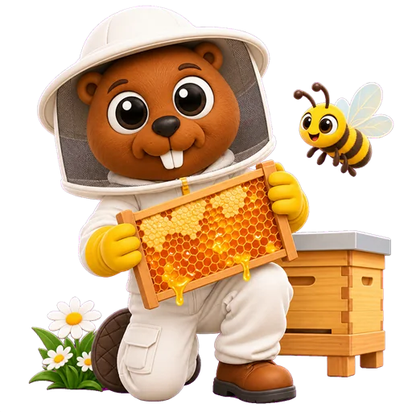
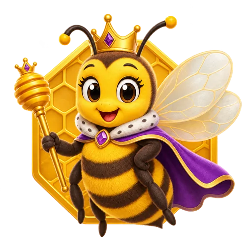
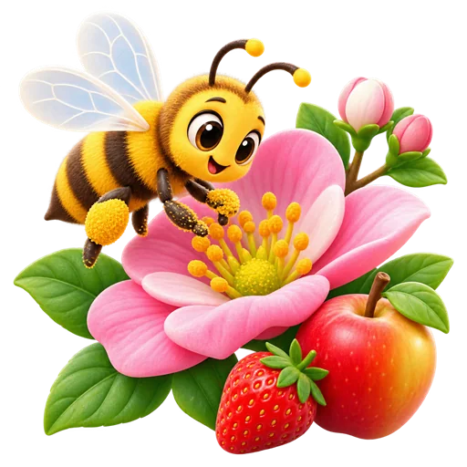
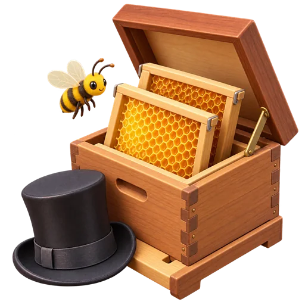

Skip to activity
🏠
Main Home
📅
Week Home
Month 9 · Level B
🏫 Go to GP English
🐝
Choose a Week
🍯
Level B · Beekeeper · Month 9

Week 1
Bees at work and at the park

Week 2
Seasons and honey

Week 3
Growing plants and honey foods

Week 4
Beekeepers and our body